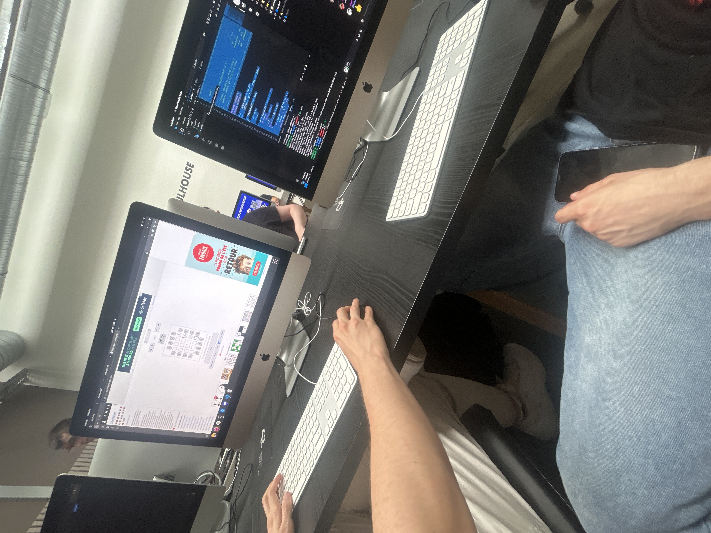
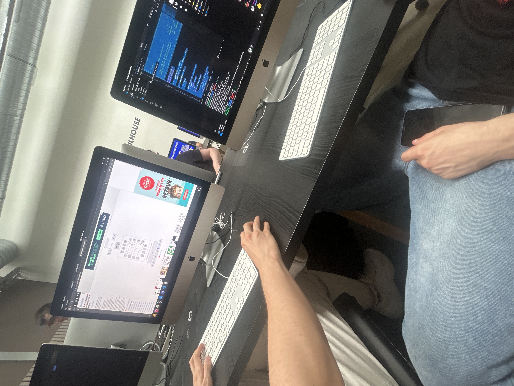

Job Étudiant - ARTE Strasbourg
Août 2025 · Prestataire API Restauration
Expérience professionnelle
Expérience en restauration collective au sein du siège européen d'ARTE à Strasbourg. Missions polyvalentes en légumerie, cafétéria, plonge et entretien des espaces communs dans un environnement professionnel exigeant.
Contexte professionnel
Entreprise : API Restauration, prestataire de restauration collective pour le siège d'ARTE.
Lieu : 4 quai du Chanoine Winterer, 67000 Strasbourg – Siège européen de la chaîne franco-allemande.
Mes actions
J’avais deux types de planning journalier :
Jour type 1
- Travail en légumerie
- Soutien à la cafétéria
- Nettoyage de la légumerie
- Évacuation des poubelles
- Pause repas
- Rangement de la vaisselle du service
- Nettoyage de la salle à manger
Jour type 2
- Travail en légumerie
- Plonge
- Pause repas
- Rangement des ustensiles de cuisine
- Nettoyage des chariots
J’utilisais différents outils comme les couteaux professionnels, les machines pour couper les légumes, la machine à café ou encore la caisse enregistreuse.
J’ai appris à effectuer toutes ces tâches en respectant les consignes de sécurité et en appliquant les règles d’hygiène.
Réussites et défis
Points positifs :
- Adaptation rapide au rythme de travail et à l'environnement professionnel
- Intégration réussie au sein de l'équipe de cuisine
- Acquisition des techniques et protocoles de travail malgré un apprentissage intensif
- Amélioration progressive et correction rapide des erreurs initiales
Difficultés rencontrées :
- Maintien du rythme soutenu tout au long de la journée
- Gestion de la fatigue physique accumulée
- Adaptation aux exigences strictes d'hygiène et de sécurité
Axes d'amélioration identifiés
- Prendre davantage le temps d'observer les méthodes de travail avant de les appliquer
- Optimiser la gestion de l'énergie pour maintenir un niveau de performance constant
- Anticiper les pics d'activité pour mieux répartir l'effort physique
Compétences développées
Techniques
- Utiliser du matériel professionnel tout en respectant les règles d’hygiène alimentaire.
- Suivre des consignes précises et garantir la sécurité des clients et de l’équipe.
- Développer une méthode rigoureuse pour le nettoyage et la gestion du temps.
Personnelles
- Gagner en autonomie et en sens des responsabilités.
- Travailler en équipe et communiquer efficacement avec mes collègues.
- Gérer la pression et la fatigue pour rester concentré pendant les moments de rush.
Cette expérience m’a permis d’améliorer ma rigueur, mon organisation et ma réactivité, des qualités essentielles dans mon parcours en BUT Réseaux et Télécoms. Elle m’a montré que, quel que soit le domaine, le travail d’équipe, la précision et la discipline restent indispensables.


 
